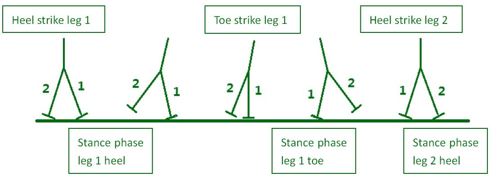

Prof. Shahriar Afkhami (New Jersey Institute of Technology, USA)
Prof. Ching-Yao Chen (National Chiao Tung University, Taiwan, ROC)
Dr. Loïc Le Goff(Aix Marseille Université, Institut Fresnel, CNRS, France)
Prof. Jean-Christophe Loudet (Université de Bordeaux, Centre de Recherche Paul Pascal, CNRS, France)
Liquid crystal is a soft matter consisting of anisotropic constituent molecules. The molecules spontaneously align in a particular order, which gives rise to elasticity in the material. Existing computational models for liquid crystal interfacial flows have employed components that make it challenging to either reproduce topological defect structures consistent with experiments, or capture interfacial forces. We develop a model that combines a tensor order parameter for liquid crystal molecular orientations with a phase-field formalism which approximates a sharp-interface limit. We compute the solution with a mixed finite element method. It opens doors to exploring new physics of interacting capillary and elastic effects in liquid crystalline free-surface flows.
Representative publication: Qiu M, Feng JJ, Loudet J-C, (2021) Phase-field model for elastocapillary flows of liquid crystals; Physical Review E, 103, 022706. (https://doi.org/10.1103/PhysRevE.103.022706)
Ferrofluid consists of nano-sized magnetic particles dispersed in a carrier liquid. In the presence of a magnetic field, a stress develops in the fluid. Inspired by our collaborator's pioneering experiments, this study is the first to address computationally how multiple ferrofluid drops interact in a rotating field. We perform direct numerical simulation using the Volume-Of-Fluid (VOF) method, and elucidate the hydrodynamic origin of the so-called planetary motion. Our study also identifies a novel interaction regime called drop-locking, which is later confirmed by experiments.
Publication: Qiu M, Afkhami S, Chen C-Y, Feng JJ, Interaction of a pair of ferrofluid drops in a rotating magnetic field; Journal of Fluid Mechanics, 2018:846, pp. 121-142. (https://doi.org/10.1017/jfm.2018.261)
Surface texturing is a technique of improving lubrication in machanical devices. It fabricates a controlled array of features, e.g. dimples, on a surface. Most importantly, these features generate additional pressure to maintain the lubricant film. Under the pressure variation, the bounding walls experience deformation much larger than the fluid film thickness, and the lubricant cavitates. In this project, I investigate numerically performance of different textures, effects of roughness in the textures, and potential applications in orthopedic implants. The computational model is based on the lubrication approximation and utilises an efficient multigrid-type integration technique to compute the non-local elastic deformation.
Representative publication: Qiu M, Chyr A, Sanders AP, Raeymaekers B, Designing prosthetic knee joints with bio-inspired bearing surfaces; Tribology International, 2014:77, pp. 106-110. (https://doi.org/10.1016/j.triboint.2014.04.025)
Unlike traditional humanoid robots which track and actuate every joint, quasi-passive bipedal robots only utilise limited actuation in some of the joints and walk mostly under inertia. A stable gait is thus a limit cycle of the underlying dynamical system. These walkers enjoy lower energy consumption and a natural gait, but suffer from reduced stability. We first construct a dynamical model for a flat-feet bipedal walker which provides better stability than predecessors with round feet. It can walk down a step of moderate height with a traditional PD controller coupled with a reinforcement learning algorithm. To allow for larger disturbance, we further design a precursor perturbation torque before encountering the ground obstacle, governed by a Monte Carlo learning controller. Numerical simulation shows that after training, the new bipedal robot could overcome a much higher step.
B.S. thesis: Qiu M, Modeling and Reinforcement Learning Control of a Quasi-passive Dynamic Walking Biped with Flat Feet, Peking University, 2011.
